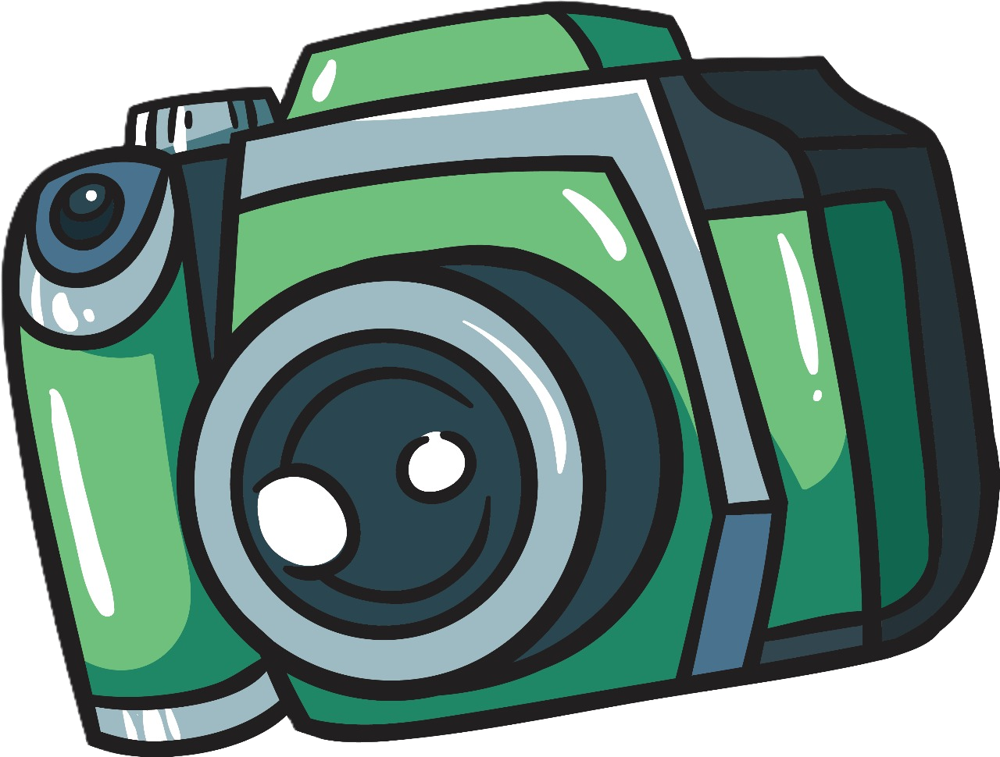

📸 Capture / Upload Leaf Image
Take a clear photo of the affected leaf for accurate disease detection

Camera not started
🖼️
Preview will appear here
💡 Tips for Best Results
Use natural daylight
Hold 6-8 inches from leaf
Focus on affected areas
Avoid shadows and glare